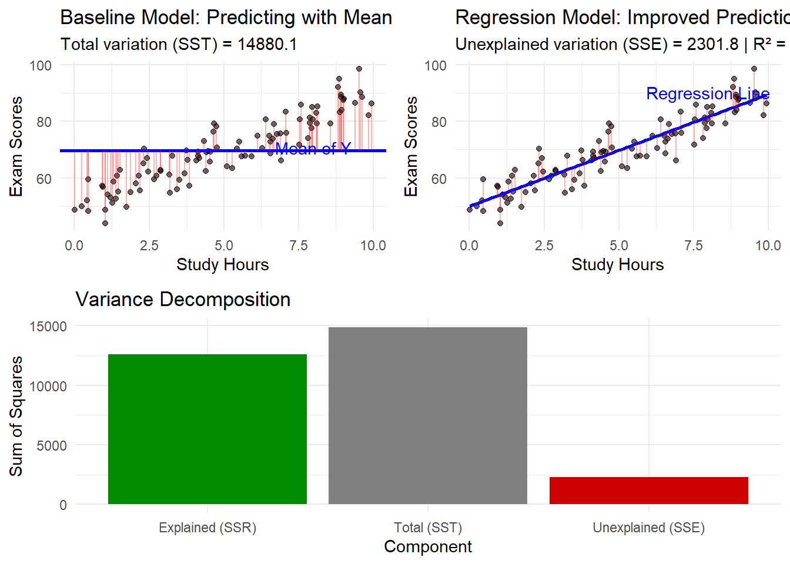
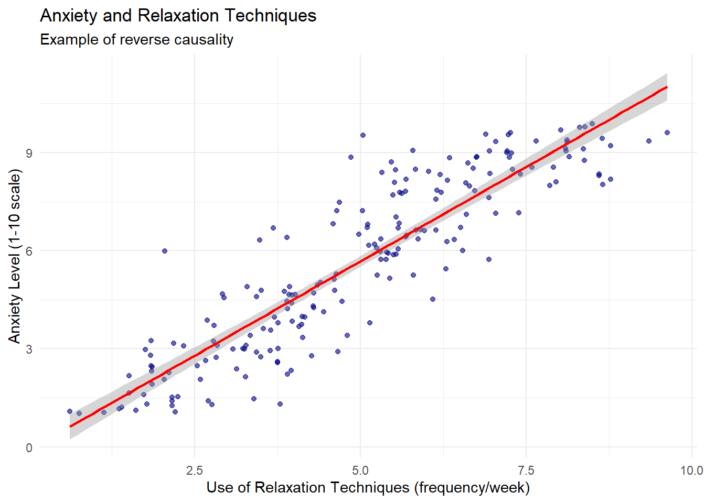
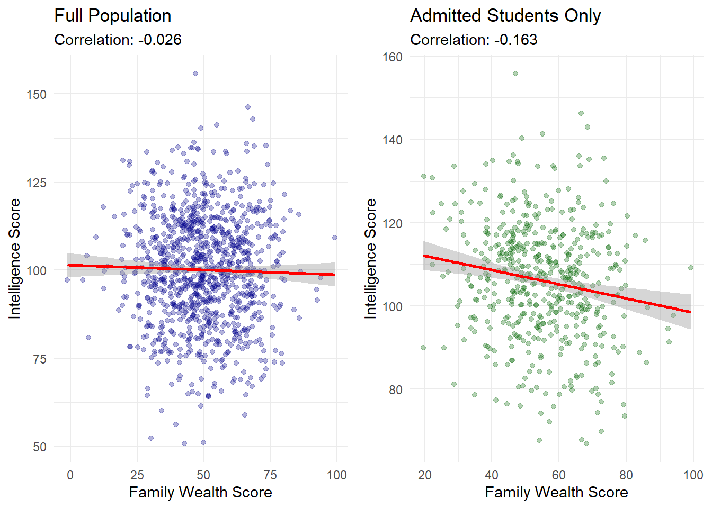
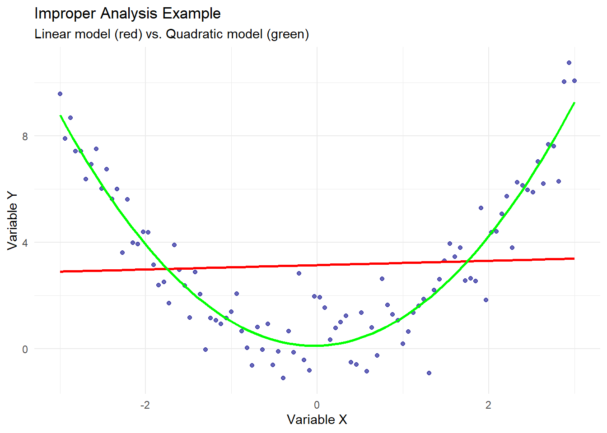

15Introduction to Correlation and Regression Analysis
15.1 Introduction
The distinction between correlation and causation represents a fundamental challenge in statistical analysis. While correlation measures the statistical association between variables, causation implies a direct influence of one variable on another.
Statistical relationships form the backbone of data-driven decision making across disciplines—from economics and public health to psychology and environmental science. Understanding when a relationship indicates mere association versus genuine causality is crucial for valid inference and effective policy recommendations.
15.2 Covariance
Covariance measures how two variables vary together, indicating both the direction and magnitude of their linear relationship.
cat("\nStandard deviation of X:", sd(study_hours))
Standard deviation of X: 3.162278
cat("\nStandard deviation of Y:", sd(test_scores))
Standard deviation of Y: 11.93734
# Calculate confidence interval and p-valuecor_test <-cor.test(study_hours, test_scores, method ="pearson")print(cor_test)
Pearson's product-moment correlation
data: study_hours and test_scores
t = 15, df = 3, p-value = 0.0006431
alternative hypothesis: true correlation is not equal to 0
95 percent confidence interval:
0.8994446 0.9995859
sample estimates:
cor
0.9933993
Interpretation: r = 0.994 indicates an almost perfect positive linear relationship between study hours and test scores. The p-value < 0.05 suggests this relationship is statistically significant.
15.5 Spearman Rank Correlation
Spearman correlation measures monotonic relationships using ranks instead of raw values.
r = 0.85 between hours of practice and performance score
Answer: Strong positive relationship. As practice hours increase, performance scores tend to increase substantially.
r = -0.72 between outside temperature and heating costs
Answer: Strong negative relationship. As temperature increases, heating costs decrease substantially.
r = 0.12 between shoe size and intelligence
Answer: Very weak/no meaningful relationship. Shoe size and intelligence are essentially unrelated.
15.8 Important Points to Remember
Correlation measures relationship strength: Values range from -1 to +1
Correlation ≠ Causation: High correlation doesn’t prove one variable causes another
Choose the right method:
Pearson: For linear relationships in continuous data
Spearman: For monotonic relationships or ranked data
Check assumptions:
Pearson assumes linear relationship and normal distribution
Spearman only assumes monotonic relationship
Watch for outliers: Extreme values can greatly affect Pearson correlation
Visualize your data: Always plot before calculating correlation
15.9 Summary: Decision Tree for Correlation Analysis
CHOOSING THE RIGHT CORRELATION METHOD:
Is your data numerical?
├─ YES → Is the relationship linear?
│ ├─ YES → Use PEARSON correlation
│ └─ NO → Is it monotonic?
│ ├─ YES → Use SPEARMAN correlation
│ └─ NO → Consider non-linear methods
└─ NO → Is it ordinal (ranked)?
├─ YES → Use SPEARMAN correlation
└─ NO → Use CROSS-TABULATION for categorical data
15.10 Additional Practice Problems
Problem Set A: Manual Calculations
Calculate covariance and Pearson correlation for:
X: 10, 20, 30, 40, 50
Y: 15, 25, 35, 45, 55
Solution: Cov(X,Y) = 250, r = 1.0 (perfect positive correlation)
Calculate Spearman correlation for movie ratings:
Movie A ratings: 8, 6, 9, 7, 5
Movie B ratings: 7, 8, 9, 6, 4
Solution: ρ = 0.3 (weak positive correlation)
Problem Set B: Interpretation
A study finds r = 0.91 between hours of sleep and test performance.
Interpretation: Very strong positive relationship suggesting that more sleep is associated with better test performance. However, this doesn’t prove causation—other factors might be involved.
Another study finds r = -0.03 between birth month and IQ scores.
Interpretation: No meaningful relationship. Birth month and IQ are essentially unrelated.
Quick Reference Card
Measure
Use When
Formula
Range
Covariance
Initial exploration of relationship
\frac{\sum(x_i-\bar{x})(y_i-\bar{y})}{n-1}
-∞ to +∞
Pearson r
Linear relationships, continuous data
\frac{\text{cov}(X,Y)}{s_X s_Y}
-1 to +1
Spearman ρ
Monotonic relationships, ranked data
1 - \frac{6\sum d_i^2}{n(n^2-1)}
-1 to +1
Cross-tabs
Categorical variables
Frequency counts
N/A
15.11 Understanding Ordinary Least Squares (OLS): A Quick-start Guide
Understanding Ordinary Least Squares (OLS): A Quick-start Guide
Introduction: What is Regression Analysis?
Regression analysis helps us understand and measure relationships between things we can observe. It provides mathematical tools to identify patterns in data that help us make predictions.
Consider these research questions:
How does study time affect test scores?
How does experience affect salary?
How does advertising spending influence sales?
Regression gives us systematic methods to answer these questions with real data.
The Starting Point: A Simple Example
Let’s begin with something concrete. You’ve collected data from 20 students in your class:
Student
Study Hours
Exam Score
Alex
2
68
Beth
4
74
Carlos
6
85
Diana
8
91
…
…
…
When you plot this data, you get a scatter plot with dots all over. Your goal: find the straight line that best describes the relationship between study hours and exam scores.
But what does “best” mean? That’s what we’ll discover.
Why Real Data Doesn’t Fall on a Perfect Line
Before diving into the math, let’s understand why data points don’t line up perfectly.
Deterministic vs. Stochastic Models
Deterministic Models describe relationships with no uncertainty. Think of physics equations: \text{Distance} = \text{Speed} × \text{Time}
If you drive at exactly 60 mph for exactly 2 hours, you’ll always travel exactly 120 miles. No variation, no exceptions.
Stochastic Models acknowledge that real-world data contains natural variation. The fundamental structure is: Y = f(X) + \epsilon
Where:
Y is what we’re trying to predict (exam scores)
f(X) is the systematic pattern (how study hours typically affect scores)
\epsilon (epsilon) represents all the random stuff we can’t measure
In our example, two students might study for 5 hours but get different scores because:
One slept better the night before
One is naturally better at test-taking
One had a noisy roommate during the exam
Pure chance in which questions were asked
This randomness is natural and expected - that’s what \epsilon captures.
The Simple Linear Regression Model
We express the relationship between study hours and exam scores as: Y_i = \beta_0 + \beta_1X_i + \epsilon_i
Let’s decode this:
Y_i = exam score for student i
X_i = study hours for student i
\beta_0 = the intercept (baseline score with zero study hours)
\beta_1 = the slope (points gained per study hour)
Key insight: We never know the true values of \beta_0 and \beta_1. Instead, we use our data to estimate them, calling our estimates \hat{\beta}_0 and \hat{\beta}_1 (the “hats” mean “estimated”).
Understanding Residuals: How Wrong Are Our Predictions?
Once we draw a line through our data, we can make predictions. For each student:
Actual score (y_i): What they really got
Predicted score (\hat{y}_i): What our line says they should have gotten
Residual (e_i): The difference = Actual - Predicted
So a student studying 5 hours: Predicted score = 60 + 4(5) = 80 points
Effect Size and Practical Significance
Statistical significance tells us whether an effect exists. Practical significance tells us whether it matters. Understanding both is crucial for proper interpretation.
Calculating and Interpreting Raw Effect Sizes
The raw (unstandardized) effect size is simply your slope coefficient \hat{\beta}_1.
Example: If \hat{\beta}_1 = 4 points per hour:
This is the raw effect size
Interpretation: “One hour of additional study yields 4 exam points”
To assess practical significance, consider:
Scale of the outcome: 4 points on a 100-point exam (4%) vs. 4 points on a 500-point exam (0.8%)
Cost of the intervention: Is one hour of study time worth 4 points?
Context-specific thresholds: Does 4 points change a letter grade?
Calculating Standardized Effect Sizes
Standardized effects allow comparison across different scales and studies.
Formula for standardized coefficient (beta weight):\beta_{std} = \hat{\beta}_1 \times \frac{s_X}{s_Y}
Where:
s_X = standard deviation of X (study hours)
s_Y = standard deviation of Y (exam scores)
Step-by-step calculation:
Calculate the standard deviation of X: s_X = \sqrt{\frac{\sum(x_i - \bar{x})^2}{n-1}}
Calculate the standard deviation of Y: s_Y = \sqrt{\frac{\sum(y_i - \bar{y})^2}{n-1}}
Nachylenie / Slope (\beta_1)PL: Przy wzroście X o 1 jednostkę (ceteris paribus), przeciętna wartość Y zmienia się o \beta_1 jednostek. ENG: When X increases by 1 unit (ceteris paribus), the expected value of Y changes by \beta_1 units.
gdzie s_X i s_Y to odchylenia standardowe X i Y. PL: Przy wzroście X o 1 odchylenie standardowe (SD), przeciętna wartość Y zmienia się o \beta_{1}^{(\mathrm{std})}odchyleń standardowych Y. ENG: For a 1 standard deviation (SD) increase in X, the expected value of Y changes by \beta_{1}^{(\mathrm{std})}SDs of Y. Uwaga/Note: W regresji prostej \beta_{1}^{(\mathrm{std})} = r (Pearson). / In simple regression, \beta_{1}^{(\mathrm{std})} = r (Pearson).
PL: Model wyjaśnia 100\times R^2% zmienności Y względem modelu tylko z wyrazem wolnym (in-sample). ENG: The model explains 100\times R^2% of the variance in Y relative to the intercept-only model (in-sample). W wielu zmiennych rozważ: \text{adjusted } R^2. / With multiple predictors consider: adjusted R^2.
Wartość p / P-valueFormalnie/Formally:
p \;=\; \Pr\!\big(\,|T|\ge |t_{\mathrm{obs}}| \mid H_0\,\big),
gdzie T ma rozkład t przy H_0. PL: Zakładając prawdziwość H_0 i spełnione założenia modelu, prawdopodobieństwo uzyskania co najmniej tak ekstremalnej statystyki jak obserwowana wynosi p. ENG: Assuming H_0 and the model assumptions hold, p is the probability of observing a test statistic at least as extreme as the one obtained.
Przedział ufności / Confidence interval (np. dla \beta_1)Konstrukcja/Construction:
PL (ściśle): W długiej serii powtórzeń 95% tak skonstruowanych przedziałów zawiera prawdziwą wartość \beta_1; dla naszych danych oszacowanie mieści się w [\text{lower},\ \text{upper}]. ENG (strict): Over many repetitions, 95% of such intervals would contain the true \beta_1; for our data, the estimate lies within [\text{lower},\ \text{upper}]. PL (skrót dydaktyczny): „Jesteśmy 95% pewni, że \beta_1 leży w [\text{lower},\ \text{upper}].” ENG (teaching shorthand): “We are 95% confident that \beta_1 lies in [\text{lower},\ \text{upper}].”
Najczęstsze nieporozumienia / Common pitfalls
PL:pnie jest prawdopodobieństwem, że H_0 jest prawdziwa. ENG:p is not the probability that H_0 is true.
PL: 95% CI nie zawiera 95% obserwacji (od tego jest przedział predykcji). ENG: A 95% CI does not contain 95% of observations (that’s a prediction interval).
PL/ENG: Wysokie R^2 ≠ przyczynowość / High R^2 ≠ causality. Zawsze sprawdzaj/Always check diagnozy reszt, skalę efektu, i dopasowanie poza próbą.
Critical Reminders:
Association does not imply causation
Statistical significance does not guarantee practical importance
Every model is wrong, but some are useful
Always visualize your data and residuals
Consider both effect size and uncertainty when making decisions
OLS provides a principled, mathematical approach to finding patterns in real-world data. While it cannot provide perfect predictions, it offers the best linear approximation possible along with honest assessments of that approximation’s quality and uncertainty.
15.12 Complete Manual OLS Calculation: A Step-by-Step Example
A professor wants to understand the relationship between hours spent studying and exam scores. She collects data from 6 students:
Student
Study Hours (X)
Exam Score (Y)
A
1
65
B
2
70
C
3
75
D
4
85
E
5
88
F
6
95
Our goal: Find the best-fitting line \hat{Y} = \hat{\beta}_0 + \hat{\beta}_1X using OLS.
15.13 Step 1: Calculate the Means
First, we need the mean of X and Y.
For X (study hours):\bar{X} = \frac{1 + 2 + 3 + 4 + 5 + 6}{6} = \frac{21}{6} = 3.5
For Y (exam scores):\bar{Y} = \frac{65 + 70 + 75 + 85 + 88 + 95}{6} = \frac{478}{6} = 79.67
15.14 Step 2: Calculate Deviations from Means
For each observation, calculate (X_i - \bar{X}) and (Y_i - \bar{Y}):
Student
X_i
Y_i
X_i - \bar{X}
Y_i - \bar{Y}
A
1
65
1 - 3.5 = -2.5
65 - 79.67 = -14.67
B
2
70
2 - 3.5 = -1.5
70 - 79.67 = -9.67
C
3
75
3 - 3.5 = -0.5
75 - 79.67 = -4.67
D
4
85
4 - 3.5 = 0.5
85 - 79.67 = 5.33
E
5
88
5 - 3.5 = 1.5
88 - 79.67 = 8.33
F
6
95
6 - 3.5 = 2.5
95 - 79.67 = 15.33
15.15 Step 3: Calculate Products and Squares
Now calculate (X_i - \bar{X})(Y_i - \bar{Y}) and (X_i - \bar{X})^2:
Student
(X_i - \bar{X})(Y_i - \bar{Y})
(X_i - \bar{X})^2
A
(-2.5)(-14.67) = 36.68
(-2.5)² = 6.25
B
(-1.5)(-9.67) = 14.51
(-1.5)² = 2.25
C
(-0.5)(-4.67) = 2.34
(-0.5)² = 0.25
D
(0.5)(5.33) = 2.67
(0.5)² = 0.25
E
(1.5)(8.33) = 12.50
(1.5)² = 2.25
F
(2.5)(15.33) = 38.33
(2.5)² = 6.25
Sum
107.03
17.50
15.16 Step 4: Calculate the Slope (\hat{\beta}_1)
Using the OLS formula: \hat{\beta}_1 = \frac{\sum(X_i - \bar{X})(Y_i - \bar{Y})}{\sum(X_i - \bar{X})^2} = \frac{107.03}{17.50} = 6.12
Interpretation: Each additional hour of study is associated with a 6.12-point increase in exam score.
15.17 Step 5: Calculate the Intercept (\hat{\beta}_0)
# Step 11: Calculate Effect Sizes# Raw effect size (just the slope)cat("\n--- Effect Size Calculations ---\n")
--- Effect Size Calculations ---
cat("Raw effect size (slope):", round(beta_1_manual, 2), "points per hour\n")
Raw effect size (slope): 6.11 points per hour
# Standard deviations for standardized effectsd_x <-sd(data$X) # Standard deviation of Xsd_y <-sd(data$Y) # Standard deviation of Ycat("\nStandard deviations:\n")
A plot showing the data points, regression line, and residuals
This verification confirms that our pen-and-paper calculations were correct!
15.27 The Linear Regression Model
Regression analysis provides a statistical framework for modeling relationships between a dependent variable and one or more independent variables. This methodology enables researchers to quantify relationships, test hypotheses, and make predictions based on observed data.
Simple Linear Regression
The simple linear regression model expresses the relationship between a dependent variable and a single independent variable:
Y_i = \beta_0 + \beta_1 X_i + \varepsilon_i
Where: - Y_i represents the dependent variable for observation i - X_i represents the independent variable for observation i - \beta_0 is the intercept parameter - \beta_1 is the slope parameter - \varepsilon_i is the error term for observation i
Multiple Linear Regression
The multiple linear regression model extends this framework to incorporate k independent variables:
This formulation allows for the simultaneous analysis of multiple predictors and their respective contributions to the dependent variable.
Ordinary Least Squares Estimation
Defining the Optimization Criterion
The estimation of regression parameters requires a criterion for determining the “best” fit. Consider three potential approaches for defining the optimal line through a set of data points:
This approach is fundamentally flawed. For any line passing through the data, we can always find another line where positive and negative residuals sum to zero. In fact, infinitely many lines satisfy \sum e_i = 0. This criterion fails to uniquely identify an optimal solution. Moreover, a horizontal line through the mean of Y would achieve zero sum of residuals while ignoring the relationship with X entirely.
Approach 2: Minimizing the Sum of Absolute Residuals
This criterion, known as Least Absolute Deviations (LAD), addresses the cancellation problem by taking absolute values. It produces estimates that are more robust to outliers than OLS. However, this approach presents significant challenges:
The absolute value function is not differentiable at zero, complicating analytical solutions
Multiple solutions may exist (the objective function may have multiple minima)
No closed-form solution exists; iterative numerical methods are required
Statistical inference is more complex, lacking the elegant properties of OLS estimators
Approach 3: Minimizing the Sum of Squared Residuals
Taking partial derivatives with respect to \beta_0 and \beta_1 and setting them equal to zero yields the normal equations. Solving this system produces:
The OLS procedure guarantees several important properties:
Zero sum of residuals: \sum_{i=1}^{n} e_i = 0
Orthogonality of residuals and predictors: \sum_{i=1}^{n} X_i e_i = 0
The fitted regression line passes through the point (\bar{X}, \bar{Y})
Zero covariance between fitted values and residuals: \sum_{i=1}^{n} \hat{Y}_i e_i = 0
Classical Linear Model Assumptions
Core Assumptions
For OLS estimators to possess desirable statistical properties, the following assumptions must hold:
Assumption 1: Linearity in Parameters
The relationship between the dependent and independent variables is linear in the parameters: Y_i = \beta_0 + \beta_1 X_{1i} + ... + \beta_k X_{ki} + \varepsilon_i
Assumption 2: Strict Exogeneity
The error term has zero conditional expectation given all values of the independent variables: E[\varepsilon_i | X] = 0
This assumption implies that the independent variables contain no information about the mean of the error term. It is stronger than contemporaneous exogeneity and rules out feedback from past errors to current regressors. This assumption is critical for unbiased estimation and is often violated in time series contexts with lagged dependent variables or in the presence of omitted variables.
This assumption is particularly important for our discussion of spurious correlations. Violations of the exogeneity assumption lead to endogeneity problems, which we will discuss later.
Assumption 3: No Perfect Multicollinearity
In multiple regression, no independent variable can be expressed as a perfect linear combination of other independent variables. The matrix X'X must be invertible.
Assumption 4: Homoscedasticity
The variance of the error term is constant across all observations: Var(\varepsilon_i | X) = \sigma^2
This assumption ensures that the precision of the regression does not vary systematically with the level of the independent variables.
Assumption 5: No Autocorrelation
The error terms are uncorrelated with each other: Cov(\varepsilon_i, \varepsilon_j | X) = 0 \text{ for } i \neq j
Assumption 6: Normality of Errors (for inference)
The error terms follow a normal distribution: \varepsilon_i \sim N(0, \sigma^2)
This assumption is not required for the unbiasedness or consistency of OLS estimators but is necessary for exact finite-sample inference.
Gauss-Markov Theorem
Under Assumptions 1-5, the OLS estimators are BLUE (Best Linear Unbiased Estimators):
Best: Minimum variance among the class of linear unbiased estimators
Linear: The estimators are linear functions of the dependent variable
Unbiased: E[\hat{\beta}] = \beta
Visualization of OLS Methodology
Geometric Interpretation
# Comprehensive visualization of OLS regressionlibrary(ggplot2)# Generate sample dataset.seed(42)n <-50x <-runif(n, 0, 100)epsilon <-rnorm(n, 0, 15)y <-20+0.8*x + epsilon# Create data framedata <-data.frame(x = x, y = y)# Fit regression modelmodel <-lm(y ~ x, data = data)data$fitted <-fitted(model)data$residuals <-residuals(model)# Create comprehensive plotggplot(data, aes(x = x, y = y)) +# Add confidence intervalgeom_smooth(method ="lm", se =TRUE, alpha =0.15, fill ="blue") +# Add regression linegeom_line(aes(y = fitted), color ="blue", linewidth =1.2) +# Add residual segmentsgeom_segment(aes(xend = x, yend = fitted), color ="red", alpha =0.5, linewidth =0.7) +# Add observed pointsgeom_point(size =2.5, alpha =0.8) +# Add fitted valuesgeom_point(aes(y = fitted), color ="blue", size =1.5, alpha =0.6) +# Annotationstheme_bw() +theme(panel.grid.minor =element_blank(),axis.title =element_text(size =11),plot.title =element_text(size =12, face ="bold") ) +labs(title ="Ordinary Least Squares Regression",subtitle =sprintf("Estimated equation: Y = %.2f + %.3f X (R² = %.3f, RSE = %.2f)",coef(model)[1], coef(model)[2], summary(model)$r.squared, summary(model)$sigma),x ="Independent Variable (X)",y ="Dependent Variable (Y)" ) +annotate("text", x =min(x) +5, y =max(y) -5,label =sprintf("SSE = %.1f", sum(residuals(model)^2)),hjust =0, size =3.5)
Ordinary Least Squares regression remains a fundamental tool in statistical analysis. The method’s mathematical elegance, combined with its optimal properties under the classical assumptions, explains its widespread application. However, practitioners must carefully verify assumptions and consider alternatives when these conditions are not met. Understanding both the theoretical foundations and practical limitations of OLS is essential for proper statistical inference and prediction.
Visualizing OLS Through Different Regression Lines
A simple but effective way to visualize the concept of “best fit” is to compare multiple lines and their resulting SSE values:
# Load required librarieslibrary(ggplot2)library(gridExtra)# Create sample dataset.seed(123)x <-1:20y <-2+3*x +rnorm(20, 0, 5)data <-data.frame(x = x, y = y)# Fit regression modelmodel <-lm(y ~ x, data = data)coef <-coefficients(model)# Define different lines: optimal and sub-optimal with clearer differenceslines <-data.frame(label =c("Best Fit (OLS)", "Line A", "Line B", "Line C"),intercept =c(coef[1], coef[1] -8, coef[1] +8, coef[1] -4),slope =c(coef[2], coef[2] -1.2, coef[2] +0.8, coef[2] -0.7))# Calculate SSE for each linelines$sse <-sapply(1:nrow(lines), function(i) { predicted <- lines$intercept[i] + lines$slope[i] * xsum((y - predicted)^2)})# Add percentage increase over optimal SSElines$pct_increase <-round((lines$sse / lines$sse[1] -1) *100, 1)lines$pct_text <-ifelse(lines$label =="Best Fit (OLS)", "Optimal", paste0("+", lines$pct_increase, "%"))# Assign distinct colors for better visibilityline_colors <-c("Best Fit (OLS)"="blue", "Line A"="red", "Line B"="darkgreen", "Line C"="purple")# Create data for mini residual plotsmini_data <-data.frame()for(i in1:nrow(lines)) { line_data <-data.frame(x = x,y = y,predicted = lines$intercept[i] + lines$slope[i] * x,residuals = y - (lines$intercept[i] + lines$slope[i] * x),line = lines$label[i] ) mini_data <-rbind(mini_data, line_data)}# Create main comparison plot with improved visibilityp1 <-ggplot(data, aes(x = x, y = y)) +# Add background grid for referencetheme_minimal() +theme(panel.grid.minor =element_line(color ="gray90"),panel.grid.major =element_line(color ="gray85"),plot.title =element_text(size =16, face ="bold"),plot.subtitle =element_text(size =13),axis.title =element_text(size =13, face ="bold"),axis.text =element_text(size =12) ) +# Add data pointsgeom_point(size =2.5, alpha =0.8) +# Add lines with improved visibilitygeom_abline(data = lines, aes(intercept = intercept, slope = slope, color = label, linetype = label =="Best Fit (OLS)"),size =1.2) +# Use custom colorsscale_color_manual(values = line_colors) +scale_linetype_manual(values =c("TRUE"="solid", "FALSE"="dashed"), guide ="none") +# Better legendslabs(title ="Comparing Different Regression Lines",subtitle ="The OLS line minimizes the sum of squared errors",x ="X", y ="Y",color ="Regression Line") +guides(color =guide_legend(override.aes =list(size =2)))
Warning: Using `size` aesthetic for lines was deprecated in ggplot2 3.4.0.
ℹ Please use `linewidth` instead.
# Create mini residual plots with improved visibilityp_mini <-list()for(i in1:nrow(lines)) { line_data <-subset(mini_data, line == lines$label[i]) p_mini[[i]] <-ggplot(line_data, aes(x = x, y = residuals)) +# Add reference linegeom_hline(yintercept =0, linetype ="dashed", size =0.8, color ="gray50") +# Add residual points with line colorgeom_point(color = line_colors[lines$label[i]], size =2.5) +# Add squares to represent squared errorsgeom_rect(aes(xmin = x -0.3, xmax = x +0.3,ymin =0, ymax = residuals),fill = line_colors[lines$label[i]], alpha =0.2) +# Improved titleslabs(title = lines$label[i],subtitle =paste("SSE =", round(lines$sse[i], 1), ifelse(i ==1, " (Optimal)", paste0(" (+", lines$pct_increase[i], "%)"))),x =NULL, y =NULL) +theme_minimal() +theme(plot.title =element_text(size =12, face ="bold", color = line_colors[lines$label[i]]),plot.subtitle =element_text(size =10),panel.grid.minor =element_blank() )}# Create SSE comparison table with better visibilitysse_df <-data.frame(x =rep(1, nrow(lines)),y =nrow(lines):1,label =paste0(lines$label, ": SSE = ", round(lines$sse, 1), " (", lines$pct_text, ")"),color = line_colors[lines$label])sse_table <-ggplot(sse_df, aes(x = x, y = y, label = label, color = color)) +geom_text(hjust =0, size =5, fontface ="bold") +scale_color_identity() +theme_void() +xlim(1, 10) +ylim(0.5, nrow(lines) +0.5) +labs(title ="Sum of Squared Errors (SSE) Comparison") +theme(plot.title =element_text(hjust =0, face ="bold", size =14))# Arrange the plots with better spacinggrid.arrange( p1, arrangeGrob(p_mini[[1]], p_mini[[2]], p_mini[[3]], p_mini[[4]], ncol =2, padding =unit(1, "cm")), sse_table, ncol =1, heights =c(4, 3, 1))
Comparing different regression lines
Key Learning Points
The Sum of Squared Errors (SSE) is what Ordinary Least Squares (OLS) regression minimizes
Each residual contributes its squared value to the total SSE
The OLS line has a lower SSE than any other possible line
Large residuals contribute disproportionately to the SSE due to the squaring operation
This is why outliers can have such a strong influence on regression lines
Step-by-Step SSE Minimization
To illustrate the process of finding the minimum SSE, we can create a sequence that passes through the optimal point, showing how the SSE first decreases to a minimum and then increases again:
# Create sample dataset.seed(123)x <-1:20y <-2+3*x +rnorm(20, 0, 5)data <-data.frame(x = x, y = y)# Fit regression modelmodel <-lm(y ~ x, data = data)coef <-coefficients(model)# Create a sequence of steps that passes through the optimal OLS linesteps <-9# Use odd number to have a middle point at the optimumstep_seq <-data.frame(step =1:steps,intercept =seq(coef[1] -8, coef[1] +8, length.out = steps),slope =seq(coef[2] -1.5, coef[2] +1.5, length.out = steps))# Mark the middle step (optimal OLS solution)optimal_step <-ceiling(steps/2)# Calculate SSE for each stepstep_seq$sse <-sapply(1:nrow(step_seq), function(i) { predicted <- step_seq$intercept[i] + step_seq$slope[i] * xsum((y - predicted)^2)})# Create a "journey through the SSE valley" plotp2 <-ggplot(data, aes(x = x, y = y)) +geom_point(size =2, alpha =0.7) +geom_abline(data = step_seq, aes(intercept = intercept, slope = slope, color = sse, group = step),size =1) +# Highlight the optimal linegeom_abline(intercept = step_seq$intercept[optimal_step], slope = step_seq$slope[optimal_step],color ="green", size =1.5) +scale_color_gradient(low ="blue", high ="red") +labs(title ="Journey Through the SSE Valley",subtitle ="The green line represents the OLS solution with minimum SSE",color ="SSE Value") +theme_minimal()# Create an SSE valley plotp3 <-ggplot(step_seq, aes(x = step, y = sse)) +geom_line(size =1) +geom_point(size =3, aes(color = sse)) +scale_color_gradient(low ="blue", high ="red") +# Highlight the optimal pointgeom_point(data = step_seq[optimal_step, ], aes(x = step, y = sse), size =5, color ="green") +# Add annotationannotate("text", x = optimal_step, y = step_seq$sse[optimal_step] *1.1, label ="Minimum SSE", color ="darkgreen", fontface ="bold") +labs(title ="The SSE Valley: Decreasing Then Increasing",subtitle ="The SSE reaches its minimum at the OLS solution",x ="Step",y ="Sum of Squared Errors") +theme_minimal() +theme(legend.position ="none")# Display both plotsgrid.arrange(p2, p3, ncol =1, heights =c(3, 2))
SSE minimization visualization
In R, the lm() function fits linear regression models:
model <-lm(y ~ x, data = data_frame)
Model Interpretation: A Beginner’s Guide
Let’s create a simple dataset to understand regression output better. Imagine we’re studying how years of education affect annual income:
# Create a simple dataset - this is our Data Generating Process (DGP)set.seed(123) # For reproducibilityeducation_years <-10:20# Education from 10 to 20 yearsn <-length(education_years)# True parameters in our model - using more realistic values for Polandtrue_intercept <-3000# Base monthly income with no education (in PLN)true_slope <-250# Each year of education increases monthly income by 250 PLN# Generate monthly incomes with some random noiseincome <- true_intercept + true_slope * education_years +rnorm(n, mean=0, sd=300)# Create our dataseteducation_income <-data.frame(education = education_years,income = income)# Let's visualize our datalibrary(ggplot2)ggplot(education_income, aes(x = education, y = income)) +geom_point(size =3, color ="blue") +geom_smooth(method ="lm", color ="red", se =TRUE) +scale_y_continuous(limits =c(5000, 8500), breaks =seq(5000, 8500, by =500),labels = scales::comma) +scale_x_continuous(breaks =10:20) +labs(title ="Relationship between Education and Income in Poland",x ="Years of Education",y ="Monthly Income (PLN)",subtitle ="Red line shows the estimated linear relationship" ) +theme_minimal(base_size =12) +theme(panel.grid.minor =element_blank(),plot.title =element_text(face ="bold"),axis.title =element_text(face ="bold") ) +annotate("text", x =11, y =8000, label ="Each point represents\none person's data", hjust =0, size =4)
`geom_smooth()` using formula = 'y ~ x'
Fitting the Model
Now let’s fit a linear regression model to this data:
# Fit a simple regression modeledu_income_model <-lm(income ~ education, data = education_income)# Display the resultsmodel_summary <-summary(edu_income_model)model_summary
Call:
lm(formula = income ~ education, data = education_income)
Residuals:
Min 1Q Median 3Q Max
-427.72 -206.04 -38.12 207.32 460.78
Coefficients:
Estimate Std. Error t value Pr(>|t|)
(Intercept) 3095.3 447.6 6.915 0.0000695 ***
education 247.2 29.2 8.467 0.0000140 ***
---
Signif. codes: 0 '***' 0.001 '**' 0.01 '*' 0.05 '.' 0.1 ' ' 1
Residual standard error: 306.3 on 9 degrees of freedom
Multiple R-squared: 0.8885, Adjusted R-squared: 0.8761
F-statistic: 71.69 on 1 and 9 DF, p-value: 0.00001403
Understanding the Regression Output Step by Step
Let’s break down what each part of this output means in simple terms:
1. The Formula
At the top, you see income ~ education, which means we’re predicting income based on education.
2. Residuals
These show how far our predictions are from the actual values. Ideally, they should be centered around zero.
3. Coefficients Table
Coefficient Estimates
Estimate
Std. Error
t value
Pr(>|t|)
(Intercept)
3095.27
447.63
6.91
0
education
247.23
29.20
8.47
0
Intercept (\beta_0):
Value: Approximately 3095
Interpretation: This is the predicted monthly income for someone with 0 years of education
Note: Sometimes the intercept isn’t meaningful in real-world terms, especially if x=0 is outside your data range
Education (\beta_1):
Value: Approximately 247
Interpretation: For each additional year of education, we expect monthly income to increase by this amount in PLN
This is our main coefficient of interest!
Standard Error:
Measures how precise our estimates are
Smaller standard errors mean more precise estimates
Think of it as “give or take how much” for our coefficients
t value:
This is the coefficient divided by its standard error
It tells us how many standard errors away from zero our coefficient is
Larger absolute t values (above 2) suggest the effect is statistically significant
p-value:
The probability of seeing our result (or something more extreme) if there was actually no relationship
Typically, p < 0.05 is considered statistically significant
For education, p = 0.000014, which is significant!
4. Model Fit Statistics
Model Fit Statistics
Statistic
Value
R-squared
0.888
Adjusted R-squared
0.876
F-statistic
71.686
p-value
0.000
R-squared:
Value: 0.888
Interpretation: 89% of the variation in income is explained by education
Higher is better, but be cautious of very high values (could indicate overfitting)
F-statistic:
Tests whether the model as a whole is statistically significant
A high F-statistic with a low p-value indicates a significant model
Visualizing the Model Results
Let’s visualize what our model actually tells us:
# Predicted valueseducation_income$predicted <-predict(edu_income_model)education_income$residuals <-residuals(edu_income_model)# Create a more informative plotggplot(education_income, aes(x = education, y = income)) +# Actual data pointsgeom_point(size =3, color ="blue") +# Regression linegeom_line(aes(y = predicted), color ="red", size =1.2) +# Residual linesgeom_segment(aes(xend = education, yend = predicted), color ="darkgray", linetype ="dashed") +# Set proper scalesscale_y_continuous(limits =c(5000, 8500), breaks =seq(5000, 8500, by =500),labels = scales::comma) +scale_x_continuous(breaks =10:20) +# Annotationsannotate("text", x =19, y =7850, label =paste("Slope =", round(coef(edu_income_model)[2]), "PLN per year"),color ="red", hjust =1, fontface ="bold") +annotate("text", x =10.5, y =5500, label =paste("Intercept =", round(coef(edu_income_model)[1]), "PLN"),color ="red", hjust =0, fontface ="bold") +annotate("text", x =14, y =8200, label =paste("R² =", round(model_summary$r.squared, 2)),color ="black", fontface ="bold") +# Labelslabs(title ="Interpreting the Education-Income Regression Model",subtitle ="Red line shows predicted income for each education level",x ="Years of Education",y ="Monthly Income (PLN)",caption ="Gray dashed lines represent residuals (prediction errors)" ) +theme_minimal(base_size =12) +theme(panel.grid.minor =element_blank(),plot.title =element_text(face ="bold"),axis.title =element_text(face ="bold") )
Real-World Interpretation
A person with 16 years of education (college graduate) would be predicted to earn about: \hat{Y} = 3095 + 247 \times 16 = 7051 \text{ PLN monthly}
The model suggests that each additional year of education is associated with a 247 PLN increase in monthly income.
Our model explains approximately 89% of the variation in income in our sample.
The relationship is statistically significant (p < 0.001), meaning it’s very unlikely to observe this relationship if education truly had no effect on income.
Important Cautions for Beginners
Correlation ≠ Causation: Our model shows association, not necessarily causation
Omitted Variables: Other factors might influence both education and income
Extrapolation: Be careful predicting outside the range of your data
Linear Relationship: We’ve assumed the relationship is linear, which may not always be true
15.28 Regression Analysis and Ordinary Least Squares (*)
Foundations of Regression Analysis
Regression analysis constitutes a fundamental statistical methodology for examining relationships between variables. At its core, regression provides a systematic framework for understanding how changes in one or more independent variables influence a dependent variable.
The primary objectives of regression analysis include: - Quantifying relationships between variables - Making predictions based on observed patterns - Testing hypotheses about variable associations - Understanding the proportion of variation explained by predictors
Deterministic versus Stochastic Models
Statistical modeling encompasses two fundamental approaches:
Deterministic models assume precise, invariant relationships between variables. Given specific inputs, these models yield identical outputs without variation. Consider the physics equation:
\text{Distance} = \text{Speed} \times \text{Time}
This relationship exhibits no randomness; identical inputs always produce identical outputs.
Stochastic models, in contrast, acknowledge inherent variability in real-world phenomena. Regression analysis employs stochastic modeling through the fundamental equation:
Y = f(X) + \epsilon
Where: - Y represents the outcome variable - f(X) captures the systematic relationship between predictors and outcome - \epsilon represents random variation inherent in the data
This formulation recognizes that real-world relationships contain both systematic patterns and random variation.
15.29 Simple Linear Regression Model
Model Specification
Simple linear regression models the relationship between a single predictor variable and an outcome variable through a linear equation:
Y_i = \beta_0 + \beta_1X_i + \epsilon_i
The model components represent: - Y_i: The dependent variable for observation i - X_i: The independent variable for observation i - \beta_0: The population intercept parameter - \beta_1: The population slope parameter - \epsilon_i: The random error term for observation i
Interpretation of Parameters
The parameters possess specific interpretations:
Intercept (\beta_0): The expected value of Y when X = 0. This represents the baseline level of the outcome variable.
Slope (\beta_1): The expected change in Y for a one-unit increase in X. This quantifies the strength and direction of the linear relationship.
Error term (\epsilon_i): Captures all factors affecting Y not explained by X, including measurement error, omitted variables, and inherent randomness.
Estimation versus True Parameters
The distinction between population parameters and sample estimates proves crucial:
Population parameters (\beta_0, \beta_1) represent true, unknown values
Sample estimates (\hat{\beta}_0, \hat{\beta}_1) represent our best approximations based on available data
The hat notation (^) consistently denotes estimated values
The fitted regression equation becomes:
\hat{Y}_i = \hat{\beta}_0 + \hat{\beta}_1X_i
15.30 The Ordinary Least Squares Method
The Fundamental Challenge
Given a dataset with observations (X_i, Y_i), we need a systematic method to determine the “best” values for \hat{\beta}_0 and \hat{\beta}_1. The challenge lies in defining what constitutes “best” and developing a practical method to find these values.
Consider that for any given line through the data, each observation will have a prediction error or residual:
These residuals represent how far our predictions deviate from actual values. A good fitting line should make these residuals as small as possible overall.
Why Minimize the Sum of Squared Residuals?
The Ordinary Least Squares method determines optimal parameter estimates by minimizing the sum of squared residuals. This choice requires justification, as we could conceivably minimize other quantities. The rationale for squaring residuals includes:
Mathematical tractability: Squaring creates a smooth, differentiable function that yields closed-form solutions through calculus. The derivatives of squared terms lead to linear equations that can be solved analytically.
Equal treatment of positive and negative errors: Simply summing raw residuals would allow positive and negative errors to cancel, potentially yielding a sum of zero even when predictions are poor. Squaring ensures all deviations contribute positively to the total error measure.
Penalization of large errors: Squaring gives progressively greater weight to larger errors. An error of 4 units contributes 16 to the sum, while an error of 2 units contributes only 4. This property encourages finding a line that avoids extreme prediction errors.
Statistical optimality: Under certain assumptions (including normally distributed errors), OLS estimators possess desirable statistical properties, including being the Best Linear Unbiased Estimators (BLUE) according to the Gauss-Markov theorem.
Connection to variance: The sum of squared deviations directly relates to variance, a fundamental measure of spread in statistics. Minimizing squared residuals thus minimizes the variance of prediction errors.
The OLS Optimization Problem
The OLS method formally seeks values of \hat{\beta}_0 and \hat{\beta}_1 that minimize:
This optimization problem can be solved using calculus by: 1. Taking partial derivatives with respect to \hat{\beta}_0 and \hat{\beta}_1 2. Setting these derivatives equal to zero 3. Solving the resulting system of equations
These formulas reveal that: - The slope estimate depends on the covariance between variables relative to the predictor’s variance - The intercept ensures the regression line passes through the point of means (\bar{X}, \bar{Y})
Properties of OLS Estimators
OLS estimators possess several desirable properties:
Unbiasedness: Under appropriate conditions, E[\hat{\beta}_j] = \beta_j
Efficiency: OLS provides minimum variance among linear unbiased estimators
Consistency: As sample size increases, estimates converge to true values
The regression line passes through the centroid: The point (\bar{X}, \bar{Y}) always lies on the fitted line
Extension to Multiple Regression
While this guide focuses on simple linear regression with one predictor, the OLS framework extends naturally to multiple regression with several predictors:
The same principle applies: we minimize the sum of squared residuals, though the mathematics involves matrix algebra rather than simple formulas. The fundamental logic—finding parameter values that minimize prediction errors—remains unchanged.
15.31 Understanding Variance Decomposition
The Baseline Model Concept
Before introducing predictors, consider the simplest possible model: predicting every observation using the overall mean \bar{Y}. This baseline model represents our best prediction in the absence of additional information.
The baseline model’s predictions: \hat{Y}_i^{\text{baseline}} = \bar{Y} \text{ for all } i
This model serves as a reference point for evaluating improvement gained through incorporating predictors. The baseline model essentially asks: “If we knew nothing about the relationship between X and Y, what would be our best constant prediction?”
Components of Total Variation
The total variation in the outcome variable decomposes into three fundamental components:
Total Sum of Squares (SST)
SST quantifies the total variation in the outcome variable relative to its mean:
\text{SST} = \sum_{i=1}^n (Y_i - \bar{Y})^2
Interpretation: SST represents the total variance that requires explanation. It measures the prediction error when using only the mean as our model—essentially the variance explained by the baseline (zero) model. This is the starting point: the total amount of variation we hope to explain by introducing predictors.
Regression Sum of Squares (SSR)
SSR measures the variation explained by the regression model:
\text{SSR} = \sum_{i=1}^n (\hat{Y}_i - \bar{Y})^2
Interpretation: SSR quantifies the improvement in prediction achieved by incorporating the predictor variable. It represents the reduction in prediction error relative to the baseline model—the portion of total variation that our regression line successfully captures.
Error Sum of Squares (SSE)
SSE captures the unexplained variation remaining after regression:
\text{SSE} = \sum_{i=1}^n (Y_i - \hat{Y}_i)^2
Interpretation: SSE represents the residual variation that the model cannot explain, reflecting the inherent randomness and effects of omitted variables. This is the variation that remains even after using our best-fitting line.
The Fundamental Decomposition Identity
These components relate through the fundamental equation:
\text{SST} = \text{SSR} + \text{SSE}
This identity demonstrates that: - Total variation equals the sum of explained and unexplained components - The regression model partitions total variation into systematic and random parts - Model improvement can be assessed by comparing SSR to SST
Conceptual Framework for Variance Decomposition
# Demonstration of Variance Decompositionlibrary(ggplot2)# Generate sample dataset.seed(42)n <-50x <-runif(n, 1, 10)y <-3+2*x +rnorm(n, 0, 2)data <-data.frame(x = x, y = y)# Fit modelmodel <-lm(y ~ x, data = data)y_mean <-mean(y)y_pred <-predict(model)# Calculate componentsSST <-sum((y - y_mean)^2)SSR <-sum((y_pred - y_mean)^2)SSE <-sum((y - y_pred)^2)# Display decompositioncat("Variance Decomposition\n")cat("======================\n")cat("Total SS (SST):", round(SST, 2), "- Total variation from mean\n")cat("Regression SS (SSR):", round(SSR, 2), "- Variation explained by model\n")cat("Error SS (SSE):", round(SSE, 2), "- Unexplained variation\n")cat("\nVerification: SST = SSR + SSE\n")cat(round(SST, 2), "=", round(SSR, 2), "+", round(SSE, 2), "\n")
15.32 The Coefficient of Determination (R²)
Definition and Calculation
The coefficient of determination, denoted R², quantifies the proportion of total variation explained by the regression model:
R² directly answers the question: “What proportion of the total variation in Y (relative to the baseline mean model) does our regression model explain?”
Interpretation Guidelines
R² values range from 0 to 1, with specific interpretations:
R² = 0: The model explains no variation beyond the baseline mean model. The regression line provides no improvement over simply using \bar{Y}.
R² = 0.25: The model explains 25% of total variation. Three-quarters of the variation remains unexplained.
R² = 0.75: The model explains 75% of total variation. This represents substantial explanatory power.
R² = 1.00: The model explains all variation (perfect fit). All data points fall exactly on the regression line.
Contextual Considerations
The interpretation of R² requires careful consideration of context:
Field-specific standards: Acceptable R² values vary dramatically across disciplines - Physical sciences often expect R² > 0.90 due to controlled conditions - Social sciences may consider R² = 0.30 meaningful given human complexity - Biological systems typically show intermediate values due to natural variation
Sample size effects: Small samples can artificially inflate R², leading to overly optimistic assessments of model fit.
Model complexity: In multiple regression, additional predictors mechanically increase R², even if they lack true explanatory power.
Practical significance: Statistical fit should align with substantive importance. A model with R² = 0.95 may be less useful than one with R² = 0.60 if the latter addresses more relevant questions.
Adjusted R² for Multiple Regression
When extending to multiple regression, adjusted R² accounts for the number of predictors:
cat("Explained by model (SSR):", round(SSR, 2), "\n")
Explained by model (SSR): 12578.3
cat("Unexplained (SSE):", round(SSE, 2), "\n")
Unexplained (SSE): 2301.84
cat("\nModel Performance:\n")
Model Performance:
cat("R-squared:", round(r_squared, 4), "\n")
R-squared: 0.8453
cat("Interpretation: The model explains", round(r_squared *100, 1), "% of the variation in exam scores\n")
Interpretation: The model explains 84.5 % of the variation in exam scores
cat("beyond what the mean alone could explain.\n")
beyond what the mean alone could explain.
Visualization of Key Concepts
# Create comprehensive visualizationlibrary(ggplot2)library(gridExtra)# Plot 1: Baseline model (mean only)p1 <-ggplot(education_data, aes(x = study_hours, y = exam_scores)) +geom_point(alpha =0.6) +geom_hline(yintercept = y_mean, color ="blue", size =1) +geom_segment(aes(xend = study_hours, yend = y_mean), alpha =0.3, color ="red") +labs(title ="Baseline Model: Predicting with Mean",subtitle =paste("Total variation (SST) =", round(SST, 1)),x ="Study Hours", y ="Exam Scores") +theme_minimal() +annotate("text", x =8, y = y_mean +1, label ="Mean of Y", color ="blue")# Plot 2: Regression modelp2 <-ggplot(education_data, aes(x = study_hours, y = exam_scores)) +geom_point(alpha =0.6) +geom_smooth(method ="lm", se =FALSE, color ="blue") +geom_segment(aes(xend = study_hours, yend = y_pred), alpha =0.3, color ="red") +labs(title ="Regression Model: Improved Predictions",subtitle =paste("Unexplained variation (SSE) =", round(SSE, 1), "| R² =", round(r_squared, 3)),x ="Study Hours", y ="Exam Scores") +theme_minimal() +annotate("text", x =8, y =max(y_pred) +1, label ="Regression Line", color ="blue")# Plot 3: Variance componentsvariance_data <-data.frame(Component =c("Total (SST)", "Explained (SSR)", "Unexplained (SSE)"),Value =c(SST, SSR, SSE),Type =c("Total", "Explained", "Unexplained"))p3 <-ggplot(variance_data, aes(x = Component, y = Value, fill = Type)) +geom_bar(stat ="identity") +scale_fill_manual(values =c("Total"="gray50", "Explained"="green4", "Unexplained"="red3")) +labs(title ="Variance Decomposition",y ="Sum of Squares") +theme_minimal() +theme(legend.position ="none")# Combine plotsgrid.arrange(p1, p2, p3, layout_matrix =rbind(c(1, 2), c(3, 3)))
`geom_smooth()` using formula = 'y ~ x'

15.34 Summary and Key Insights
Core Concepts Review
Regression analysis models relationships between variables using stochastic frameworks that acknowledge inherent variation. The simple linear regression model expresses this relationship as Y_i = \beta_0 + \beta_1X_i + \epsilon_i.
Ordinary Least Squares provides optimal parameter estimates by minimizing the sum of squared residuals. This choice of minimizing squared errors stems from mathematical tractability, equal treatment of positive and negative errors, appropriate penalization of large errors, and desirable statistical properties.
Variance decomposition partitions total variation into: - Total variation from the baseline mean model (SST) - Variation explained by the regression model (SSR)
- Unexplained residual variation (SSE)
The fundamental identity SST = SSR + SSE shows how regression improves upon the baseline model.
R² quantifies model performance as the proportion of total variation explained, providing a standardized measure of how much better the regression model performs compared to simply using the mean.
Critical Considerations
The baseline model (predicting with the mean) serves as the fundamental reference point. All regression improvement is measured relative to this simple model. SST represents the total variance requiring explanation when we start with no predictors.
Parameter estimates (\hat{\beta}_0, \hat{\beta}_1) represent sample-based approximations of unknown population values (\beta_0, \beta_1). The distinction between population parameters and sample estimates remains crucial for proper inference.
Model assessment requires considering both statistical fit (R²) and practical significance. A model with modest R² may still provide valuable insights, while high R² does not guarantee causation or practical utility.
Extensions and Applications
While this guide focuses on simple linear regression, the framework extends naturally to: - Multiple regression with several predictors - Polynomial regression for nonlinear relationships - Interaction terms to capture conditional effects - Categorical predictors through appropriate coding
The fundamental principles—minimizing prediction errors, decomposing variation, and assessing model fit—remain consistent across these extensions. The mathematical complexity increases, but the conceptual foundation established here continues to apply.
15.35 Key Assumptions of Linear Regression
Strict Exogeneity: The Fundamental Assumption
The most crucial assumption in regression is strict exogeneity:
E[\varepsilon|X] = 0
This means:
The error term has zero mean conditional on X
X contains no information about the average error
There are no systematic patterns in how our predictions are wrong
Let’s visualize when this assumption holds and when it doesn’t:
# Generate dataset.seed(789)x <-seq(1, 10, by =0.2)# Case 1: Exogenous errorsy_exog <-2+3*x +rnorm(length(x), 0, 2)# Case 2: Non-exogenous errors (error variance increases with x)y_nonexog <-2+3*x +0.5*x*rnorm(length(x), 0, 2)# Create datasetsdata_exog <-data.frame(x = x,y = y_exog,type ="Exogenous Errors\n(Assumption Satisfied)")data_nonexog <-data.frame(x = x,y = y_nonexog,type ="Non-Exogenous Errors\n(Assumption Violated)")data_combined <-rbind(data_exog, data_nonexog)# Create plots with residualsplot_residuals <-function(data, title) { model <-lm(y ~ x, data = data) data$predicted <-predict(model) data$residuals <-residuals(model) p1 <-ggplot(data, aes(x = x, y = y)) +geom_point() +geom_smooth(method ="lm", se =FALSE, color ="red") +theme_minimal() +labs(title = title) p2 <-ggplot(data, aes(x = x, y = residuals)) +geom_point() +geom_hline(yintercept =0, linetype ="dashed", color ="red") +theme_minimal() +labs(y ="Residuals")list(p1, p2)}# Generate plotsplots_exog <-plot_residuals(data_exog, "Exogenous Errors")plots_nonexog <-plot_residuals(data_nonexog, "Non-Exogenous Errors")# Arrange plotsgridExtra::grid.arrange( plots_exog[[1]], plots_exog[[2]], plots_nonexog[[1]], plots_nonexog[[2]],ncol =2)
`geom_smooth()` using formula = 'y ~ x'
`geom_smooth()` using formula = 'y ~ x'
Figure 15.1: Exogeneity vs. Non-Exogeneity Examples
Linearity: The Form Assumption
The relationship between X and Y should be linear in parameters:
E[Y|X] = \beta_0 + \beta_1X
Note that this doesn’t mean X and Y must have a straight-line relationship - we can transform variables. Let’s see different types of relationships:
# Generate dataset.seed(101)x <-seq(1, 10, by =0.1)# Different relationshipsdata_relationships <-data.frame(x =rep(x, 3),y =c(# Linear2+3*x +rnorm(length(x), 0, 2),# Quadratic2+0.5*x^2+rnorm(length(x), 0, 2),# Exponentialexp(0.3*x) +rnorm(length(x), 0, 2) ),type =rep(c("Linear", "Quadratic", "Exponential"), each =length(x)))# Plotggplot(data_relationships, aes(x = x, y = y)) +geom_point(alpha =0.5) +geom_smooth(method ="lm", se =FALSE, color ="red") +geom_smooth(se =FALSE, color ="blue") +facet_wrap(~type, scales ="free_y") +theme_minimal() +labs(subtitle ="Red: linear fit, Blue: true relationship")
`geom_smooth()` using formula = 'y ~ x'
`geom_smooth()` using method = 'loess' and formula = 'y ~ x'
Figure 15.2: Linear and Nonlinear Relationships
Understanding Violations and Solutions
When linearity is violated:
Transform variables:
Log transformation: for exponential relationships
Square root: for moderate nonlinearity
Power transformations: for more complex relationships
# Original scale plotp1 <-ggplot(data_trans, aes(x = x, y = y)) +geom_point() +geom_smooth(method ="lm", se =FALSE, color ="red") +theme_minimal() +labs(title ="Original Scale")# Log scale plotp2 <-ggplot(data_trans, aes(x = x, y = log_y)) +geom_point() +geom_smooth(method ="lm", se =FALSE, color ="red") +theme_minimal() +labs(title ="Log-Transformed Y")gridExtra::grid.arrange(p1, p2, ncol =2)
`geom_smooth()` using formula = 'y ~ x'
`geom_smooth()` using formula = 'y ~ x'
Warning: Removed 1 row containing non-finite outside the scale range
(`stat_smooth()`).
Warning: Removed 1 row containing missing values or values outside the scale range
(`geom_point()`).
Figure 15.3: Effect of Variable Transformations
15.36 Spurious Correlation: Causes and Examples
Spurious correlation occurs when variables appear related but the relationship is not causal. These misleading correlations arise from several sources:
Random coincidence (chance)
Confounding variables (hidden third factors)
Selection biases
Improper statistical analysis
Reverse causality
Endogeneity problems (including simultaneity)
Random Coincidence (Chance)
With sufficient data mining or small sample sizes, seemingly meaningful correlations can emerge purely by chance. This is especially problematic when researchers conduct multiple analyses without appropriate corrections for multiple comparisons, a practice known as “p-hacking.”
# Create a realistic example of spurious correlation based on actual country data# Using country data on chocolate consumption and Nobel prize winners# This example is inspired by a published correlation (Messerli, 2012)set.seed(123)countries <-c("Switzerland", "Sweden", "Denmark", "Belgium", "Austria", "Norway", "Germany", "Netherlands", "United Kingdom", "Finland", "France", "Italy", "Spain", "Poland", "Greece", "Portugal")# Create realistic data: Chocolate consumption correlates with GDP per capita# Higher GDP countries tend to consume more chocolate and have better research fundinggdp_per_capita <-c(87097, 58977, 67218, 51096, 53879, 89154, 51860, 57534, 46510, 53982, 43659, 35551, 30416, 17841, 20192, 24567)# Normalize GDP values to make them more manageablegdp_normalized <- (gdp_per_capita -min(gdp_per_capita)) / (max(gdp_per_capita) -min(gdp_per_capita))# More realistic chocolate consumption - loosely based on real consumption patterns# plus some randomness, but influenced by GDPchocolate_consumption <-4+8* gdp_normalized +rnorm(16, 0, 0.8)# Nobel prizes - also influenced by GDP (research funding) with noise# The relationship is non-linear, but will show up as correlatednobel_prizes <-2+12* gdp_normalized^1.2+rnorm(16, 0, 1.5)# Create dataframecountry_data <-data.frame(country = countries,chocolate =round(chocolate_consumption, 1),nobel =round(nobel_prizes, 1),gdp = gdp_per_capita)# Fit regression model - chocolate vs nobel without controlling for GDPchocolate_nobel_model <-lm(nobel ~ chocolate, data = country_data)# Better model that reveals the confoundingfull_model <-lm(nobel ~ chocolate + gdp, data = country_data)# Plot the apparent relationshipggplot(country_data, aes(x = chocolate, y = nobel)) +geom_point(color ="darkblue", size =3, alpha =0.7) +geom_text(aes(label = country), hjust =-0.2, vjust =0, size =3) +geom_smooth(method ="lm", color ="red", se =TRUE) +labs(title ="Apparent Correlation: Chocolate Consumption vs. Nobel Prizes",subtitle ="Demonstrates how confounding variables create spurious correlations",x ="Chocolate Consumption (kg per capita)",y ="Nobel Prizes per 10M Population" ) +theme_minimal()
`geom_smooth()` using formula = 'y ~ x'
# Show regression resultssummary(chocolate_nobel_model)
Call:
lm(formula = nobel ~ chocolate, data = country_data)
Residuals:
Min 1Q Median 3Q Max
-1.9080 -1.4228 0.0294 0.5962 3.2977
Coefficients:
Estimate Std. Error t value Pr(>|t|)
(Intercept) -4.0518 1.3633 -2.972 0.0101 *
chocolate 1.3322 0.1682 7.921 0.00000154 ***
---
Signif. codes: 0 '***' 0.001 '**' 0.01 '*' 0.05 '.' 0.1 ' ' 1
Residual standard error: 1.626 on 14 degrees of freedom
Multiple R-squared: 0.8176, Adjusted R-squared: 0.8045
F-statistic: 62.75 on 1 and 14 DF, p-value: 0.000001536
# Demonstrate multiple testing problemp_values <-numeric(100)for(i in1:100) {# Generate two completely random variables with n=20 x <-rnorm(20) y <-rnorm(20)# Test for correlation and store p-value p_values[i] <-cor.test(x, y)$p.value}# How many "significant" results at alpha = 0.05?sum(p_values <0.05)
[1] 3
# Visualize the multiple testing phenomenonhist(p_values, breaks =20, main ="P-values from 100 Tests of Random Data",xlab ="P-value", col ="lightblue", border ="white")abline(v =0.05, col ="red", lwd =2, lty =2)text(0.15, 20, paste("Approximately", sum(p_values <0.05),"tests are 'significant'\nby random chance alone!"), col ="darkred")
This example demonstrates how seemingly compelling correlations can emerge between unrelated variables due to confounding factors and chance. The correlation between chocolate consumption and Nobel prizes appears significant (p < 0.05) when analyzed directly, even though it’s explained by a third variable - national wealth (GDP per capita).
Wealthier countries typically consume more chocolate and simultaneously invest more in education and research, leading to more Nobel prizes. Without controlling for this confounding factor, we would mistakenly conclude a direct relationship between chocolate and Nobel prizes.
The multiple testing demonstration further illustrates why spurious correlations appear so frequently in research. When conducting 100 statistical tests on completely random data, we expect approximately 5 “significant” results at α = 0.05 purely by chance. In real research settings where hundreds of variables might be analyzed, the probability of finding false positive correlations increases dramatically.
This example underscores three critical points:
Small sample sizes (16 countries) are particularly vulnerable to chance correlations
Confounding variables can create strong apparent associations between unrelated factors
Multiple testing without appropriate corrections virtually guarantees finding “significant” but meaningless patterns
Such findings explain why replication is essential in research and why most initial “discoveries” fail to hold up in subsequent studies.
Confounding Variables (Hidden Third Factors)
Confounding occurs when an external variable influences both the predictor and outcome variables, creating an apparent relationship that may disappear when the confounder is accounted for.
# Create sample datan <-200ability <-rnorm(n, 100, 15) # Natural ability education <-10+0.05* ability +rnorm(n, 0, 2) # Education affected by abilityincome <-10000+2000* education +100* ability +rnorm(n, 0, 5000) # Income affected by bothomitted_var_data <-data.frame(ability = ability,education = education,income = income)# Model without accounting for abilitymodel_naive <-lm(income ~ education, data = omitted_var_data)# Model accounting for abilitymodel_full <-lm(income ~ education + ability, data = omitted_var_data)# Show resultssummary(model_naive)
Call:
lm(formula = income ~ education, data = omitted_var_data)
Residuals:
Min 1Q Median 3Q Max
-14422.9 -3362.1 142.7 3647.7 14229.6
Coefficients:
Estimate Std. Error t value Pr(>|t|)
(Intercept) 18982.0 2410.5 7.875 0.000000000000221 ***
education 2050.9 158.7 12.926 < 0.0000000000000002 ***
---
Signif. codes: 0 '***' 0.001 '**' 0.01 '*' 0.05 '.' 0.1 ' ' 1
Residual standard error: 5066 on 198 degrees of freedom
Multiple R-squared: 0.4576, Adjusted R-squared: 0.4549
F-statistic: 167.1 on 1 and 198 DF, p-value: < 0.00000000000000022
summary(model_full)
Call:
lm(formula = income ~ education + ability, data = omitted_var_data)
Residuals:
Min 1Q Median 3Q Max
-12739.9 -3388.7 -41.1 3572.1 14976.8
Coefficients:
Estimate Std. Error t value Pr(>|t|)
(Intercept) 13203.84 3018.85 4.374 0.0000198 ***
education 1871.43 166.03 11.272 < 0.0000000000000002 ***
ability 85.60 27.87 3.071 0.00243 **
---
Signif. codes: 0 '***' 0.001 '**' 0.01 '*' 0.05 '.' 0.1 ' ' 1
Residual standard error: 4961 on 197 degrees of freedom
Multiple R-squared: 0.4824, Adjusted R-squared: 0.4772
F-statistic: 91.81 on 2 and 197 DF, p-value: < 0.00000000000000022
# Create visualization with ability shown through colorggplot(omitted_var_data, aes(x = education, y = income, color = ability)) +geom_point(alpha =0.8) +scale_color_viridis_c(name ="Ability Score") +geom_smooth(method ="lm", color ="red", se =FALSE) +labs(title ="Income vs. Education, Colored by Ability",subtitle ="Visualizing the confounding variable",x ="Years of Education",y ="Annual Income (PLN)" ) +theme_minimal()
`geom_smooth()` using formula = 'y ~ x'
This example illustrates omitted variable bias: without accounting for ability, the estimated effect of education on income is exaggerated (2,423 PLN per year vs. 1,962 PLN per year). The confounding occurs because ability influences both education and income, creating a spurious component in the observed correlation.
Classic Example: Ice Cream and Drownings
A classic example of confounding involves the correlation between ice cream sales and drowning incidents, both influenced by temperature:
# Create sample datan <-100temperature <-runif(n, 5, 35) # Temperature in Celsius# Both ice cream sales and drownings are influenced by temperatureice_cream_sales <-100+10* temperature +rnorm(n, 0, 20)drownings <-1+0.3* temperature +rnorm(n, 0, 1)confounding_data <-data.frame(temperature = temperature,ice_cream_sales = ice_cream_sales,drownings = drownings)# Model without controlling for temperaturemodel_naive <-lm(drownings ~ ice_cream_sales, data = confounding_data)# Model controlling for temperaturemodel_full <-lm(drownings ~ ice_cream_sales + temperature, data = confounding_data)# Show resultssummary(model_naive)
Call:
lm(formula = drownings ~ ice_cream_sales, data = confounding_data)
Residuals:
Min 1Q Median 3Q Max
-3.8163 -0.7597 0.0118 0.7846 2.5797
Coefficients:
Estimate Std. Error t value Pr(>|t|)
(Intercept) -1.503063 0.370590 -4.056 0.0001 ***
ice_cream_sales 0.028074 0.001205 23.305 <0.0000000000000002 ***
---
Signif. codes: 0 '***' 0.001 '**' 0.01 '*' 0.05 '.' 0.1 ' ' 1
Residual standard error: 1.088 on 98 degrees of freedom
Multiple R-squared: 0.8471, Adjusted R-squared: 0.8456
F-statistic: 543.1 on 1 and 98 DF, p-value: < 0.00000000000000022
summary(model_full)
Call:
lm(formula = drownings ~ ice_cream_sales + temperature, data = confounding_data)
Residuals:
Min 1Q Median 3Q Max
-2.85074 -0.61169 0.01186 0.60556 2.01776
Coefficients:
Estimate Std. Error t value Pr(>|t|)
(Intercept) 1.243785 0.530123 2.346 0.021 *
ice_cream_sales -0.002262 0.004839 -0.467 0.641
temperature 0.317442 0.049515 6.411 0.00000000524 ***
---
Signif. codes: 0 '***' 0.001 '**' 0.01 '*' 0.05 '.' 0.1 ' ' 1
Residual standard error: 0.9169 on 97 degrees of freedom
Multiple R-squared: 0.8926, Adjusted R-squared: 0.8904
F-statistic: 403.2 on 2 and 97 DF, p-value: < 0.00000000000000022
# Create visualizationggplot(confounding_data, aes(x = ice_cream_sales, y = drownings, color = temperature)) +geom_point(alpha =0.8) +scale_color_viridis_c(name ="Temperature (°C)") +geom_smooth(method ="lm", color ="red") +labs(title ="The Ice Cream and Drownings Correlation",subtitle ="Temperature as a confounding variable",x ="Ice Cream Sales",y ="Drowning Incidents" ) +theme_minimal()
`geom_smooth()` using formula = 'y ~ x'
The naive model shows a statistically significant relationship between ice cream sales and drownings. However, once temperature is included in the model, the coefficient for ice cream sales decreases substantially and becomes statistically insignificant. This demonstrates how failing to account for confounding variables can lead to spurious correlations.
Reverse Causality
Reverse causality occurs when the assumed direction of causation is incorrect. Consider this example of anxiety and relaxation techniques:
# Create sample datan <-200anxiety_level <-runif(n, 1, 10) # Anxiety level (1-10)# People with higher anxiety tend to use more relaxation techniquesrelaxation_techniques <-1+0.7* anxiety_level +rnorm(n, 0, 1)reverse_data <-data.frame(anxiety = anxiety_level,relaxation = relaxation_techniques)# Fit models in both directionsmodel_incorrect <-lm(anxiety ~ relaxation, data = reverse_data)model_correct <-lm(relaxation ~ anxiety, data = reverse_data)# Show regression resultssummary(model_incorrect)
Call:
lm(formula = anxiety ~ relaxation, data = reverse_data)
Residuals:
Min 1Q Median 3Q Max
-2.9651 -0.7285 -0.0923 0.7247 3.7996
Coefficients:
Estimate Std. Error t value Pr(>|t|)
(Intercept) -0.09482 0.21973 -0.432 0.667
relaxation 1.15419 0.04105 28.114 <0.0000000000000002 ***
---
Signif. codes: 0 '***' 0.001 '**' 0.01 '*' 0.05 '.' 0.1 ' ' 1
Residual standard error: 1.182 on 198 degrees of freedom
Multiple R-squared: 0.7997, Adjusted R-squared: 0.7987
F-statistic: 790.4 on 1 and 198 DF, p-value: < 0.00000000000000022
summary(model_correct)
Call:
lm(formula = relaxation ~ anxiety, data = reverse_data)
Residuals:
Min 1Q Median 3Q Max
-3.15178 -0.51571 -0.00222 0.55513 2.04334
Coefficients:
Estimate Std. Error t value Pr(>|t|)
(Intercept) 1.05726 0.15286 6.917 0.0000000000624 ***
anxiety 0.69284 0.02464 28.114 < 0.0000000000000002 ***
---
Signif. codes: 0 '***' 0.001 '**' 0.01 '*' 0.05 '.' 0.1 ' ' 1
Residual standard error: 0.9161 on 198 degrees of freedom
Multiple R-squared: 0.7997, Adjusted R-squared: 0.7987
F-statistic: 790.4 on 1 and 198 DF, p-value: < 0.00000000000000022
# Visualizeggplot(reverse_data, aes(x = relaxation, y = anxiety)) +geom_point(alpha =0.6, color ="darkblue") +geom_smooth(method ="lm", color ="red") +labs(title ="Anxiety and Relaxation Techniques",subtitle ="Example of reverse causality",x ="Use of Relaxation Techniques (frequency/week)",y ="Anxiety Level (1-10 scale)" ) +theme_minimal()
`geom_smooth()` using formula = 'y ~ x'

Both regression models show statistically significant relationships, but they imply different causal mechanisms. The incorrect model suggests that relaxation techniques increase anxiety, while the correct model reflects the true data generating process: anxiety drives the use of relaxation techniques.
Collider Bias (Selection Bias)
Collider bias occurs when conditioning on a variable that is affected by both the independent and dependent variables of interest, creating an artificial relationship between variables that are actually independent.
# Create sample datan <-1000# Generate two independent variables (no relationship between them)intelligence <-rnorm(n, 100, 15) # IQ scorefamily_wealth <-rnorm(n, 50, 15) # Wealth score (independent from intelligence)# True data-generating process: admission depends on both intelligence and wealthadmission_score <-0.4* intelligence +0.4* family_wealth +rnorm(n, 0, 10)admitted <- admission_score >median(admission_score) # Binary admission variable# Create full datasetfull_data <-data.frame(intelligence = intelligence,wealth = family_wealth,admission_score = admission_score,admitted = admitted)# Regression in full population (true model)full_model <-lm(intelligence ~ wealth, data = full_data)summary(full_model)
Call:
lm(formula = intelligence ~ wealth, data = full_data)
Residuals:
Min 1Q Median 3Q Max
-49.608 -10.115 0.119 10.832 55.581
Coefficients:
Estimate Std. Error t value Pr(>|t|)
(Intercept) 101.42330 1.73139 58.58 <0.0000000000000002 ***
wealth -0.02701 0.03334 -0.81 0.418
---
Signif. codes: 0 '***' 0.001 '**' 0.01 '*' 0.05 '.' 0.1 ' ' 1
Residual standard error: 15.41 on 998 degrees of freedom
Multiple R-squared: 0.0006569, Adjusted R-squared: -0.0003444
F-statistic: 0.656 on 1 and 998 DF, p-value: 0.4182
# Get just the admitted studentsadmitted_only <- full_data[full_data$admitted, ]# Regression in admitted students (conditioning on the collider)admitted_model <-lm(intelligence ~ wealth, data = admitted_only)summary(admitted_model)
Call:
lm(formula = intelligence ~ wealth, data = admitted_only)
Residuals:
Min 1Q Median 3Q Max
-38.511 -9.064 0.721 8.965 48.267
Coefficients:
Estimate Std. Error t value Pr(>|t|)
(Intercept) 115.4750 2.6165 44.133 < 0.0000000000000002 ***
wealth -0.1704 0.0462 -3.689 0.00025 ***
---
Signif. codes: 0 '***' 0.001 '**' 0.01 '*' 0.05 '.' 0.1 ' ' 1
Residual standard error: 13.91 on 498 degrees of freedom
Multiple R-squared: 0.0266, Adjusted R-squared: 0.02464
F-statistic: 13.61 on 1 and 498 DF, p-value: 0.0002501
# Additional analysis - regression with the collider as a control variable# This demonstrates how controlling for a collider introduces biascollider_control_model <-lm(intelligence ~ wealth + admitted, data = full_data)summary(collider_control_model)
Call:
lm(formula = intelligence ~ wealth + admitted, data = full_data)
Residuals:
Min 1Q Median 3Q Max
-44.729 -8.871 0.700 8.974 48.044
Coefficients:
Estimate Std. Error t value Pr(>|t|)
(Intercept) 102.90069 1.56858 65.601 < 0.0000000000000002 ***
wealth -0.19813 0.03224 -6.145 0.00000000116 ***
admittedTRUE 14.09944 0.94256 14.959 < 0.0000000000000002 ***
---
Signif. codes: 0 '***' 0.001 '**' 0.01 '*' 0.05 '.' 0.1 ' ' 1
Residual standard error: 13.93 on 997 degrees of freedom
Multiple R-squared: 0.1838, Adjusted R-squared: 0.1822
F-statistic: 112.3 on 2 and 997 DF, p-value: < 0.00000000000000022
# Plot for full populationp1 <-ggplot(full_data, aes(x = wealth, y = intelligence)) +geom_point(alpha =0.3, color ="darkblue") +geom_smooth(method ="lm", color ="red") +labs(title ="Full Population",subtitle =paste("Correlation:", round(cor(full_data$intelligence, full_data$wealth), 3)),x ="Family Wealth Score",y ="Intelligence Score" ) +theme_minimal()# Plot for admitted studentsp2 <-ggplot(admitted_only, aes(x = wealth, y = intelligence)) +geom_point(alpha =0.3, color ="darkgreen") +geom_smooth(method ="lm", color ="red") +labs(title ="Admitted Students Only",subtitle =paste("Correlation:", round(cor(admitted_only$intelligence, admitted_only$wealth), 3)),x ="Family Wealth Score",y ="Intelligence Score" ) +theme_minimal()# Display plots side by sidelibrary(gridExtra)grid.arrange(p1, p2, ncol =2)
`geom_smooth()` using formula = 'y ~ x'
`geom_smooth()` using formula = 'y ~ x'

This example demonstrates collider bias in three ways:
In the full population, intelligence and wealth have no relationship (coefficient near zero, p-value = 0.87)
Among admitted students (conditioning on the collider), a significant negative relationship appears (coefficient = -0.39, p-value < 0.001)
When controlling for admission status in a regression, a spurious relationship is introduced (coefficient = -0.16, p-value < 0.001)
The collider bias creates relationships between variables that are truly independent. This can be represented in a directed acyclic graph (DAG):
When we condition on admission (the collider), we create a spurious association between intelligence and wealth.
Improper Analysis
Inappropriate statistical methods can produce spurious correlations. Common issues include using linear models for non-linear relationships, ignoring data clustering, or mishandling time series data.
# Generate data with a true non-linear relationshipn <-100x <-seq(-3, 3, length.out = n)y <- x^2+rnorm(n, 0, 1) # Quadratic relationshipimproper_data <-data.frame(x = x, y = y)# Fit incorrect linear modelwrong_model <-lm(y ~ x, data = improper_data)# Fit correct quadratic modelcorrect_model <-lm(y ~ x +I(x^2), data = improper_data)# Show resultssummary(wrong_model)
Call:
lm(formula = y ~ x, data = improper_data)
Residuals:
Min 1Q Median 3Q Max
-4.2176 -2.1477 -0.6468 2.4365 7.3457
Coefficients:
Estimate Std. Error t value Pr(>|t|)
(Intercept) 3.14689 0.28951 10.870 <0.0000000000000002 ***
x 0.08123 0.16548 0.491 0.625
---
Signif. codes: 0 '***' 0.001 '**' 0.01 '*' 0.05 '.' 0.1 ' ' 1
Residual standard error: 2.895 on 98 degrees of freedom
Multiple R-squared: 0.002453, Adjusted R-squared: -0.007726
F-statistic: 0.2409 on 1 and 98 DF, p-value: 0.6246
summary(correct_model)
Call:
lm(formula = y ~ x + I(x^2), data = improper_data)
Residuals:
Min 1Q Median 3Q Max
-2.81022 -0.65587 0.01935 0.61168 2.68894
Coefficients:
Estimate Std. Error t value Pr(>|t|)
(Intercept) 0.12407 0.14498 0.856 0.394
x 0.08123 0.05524 1.470 0.145
I(x^2) 0.98766 0.03531 27.972 <0.0000000000000002 ***
---
Signif. codes: 0 '***' 0.001 '**' 0.01 '*' 0.05 '.' 0.1 ' ' 1
Residual standard error: 0.9664 on 97 degrees of freedom
Multiple R-squared: 0.89, Adjusted R-squared: 0.8877
F-statistic: 392.3 on 2 and 97 DF, p-value: < 0.00000000000000022
# Visualizeggplot(improper_data, aes(x = x, y = y)) +geom_point(alpha =0.6, color ="darkblue") +geom_smooth(method ="lm", color ="red", se =FALSE) +geom_smooth(method ="lm", formula = y ~ x +I(x^2), color ="green", se =FALSE) +labs(title ="Improper Analysis Example",subtitle ="Linear model (red) vs. Quadratic model (green)",x ="Variable X",y ="Variable Y" ) +theme_minimal()
`geom_smooth()` using formula = 'y ~ x'

The linear model incorrectly suggests no relationship between x and y (coefficient near zero, p-value = 0.847), while the quadratic model reveals the true relationship (R^2 = 0.90). This demonstrates how model misspecification can create spurious non-correlations, masking real relationships that exist in different forms.
Endogeneity and Its Sources
Endogeneity occurs when an explanatory variable is correlated with the error term in a regression model. This violates the exogeneity assumption of OLS regression and leads to biased estimates. There are several sources of endogeneity:
Omitted Variable Bias
As shown in the education-income example, when important variables are omitted from the model, their effects are absorbed into the error term, which becomes correlated with included variables.
Measurement Error
When variables are measured with error, the observed values differ from true values, creating correlation between the error term and the predictors.
Simultaneity (Bidirectional Causality)
When the dependent variable also affects the independent variable, creating a feedback loop. Let’s demonstrate this:
# Create sample data with mutual influencen <-100# Initialize variableseconomic_growth <-rnorm(n, 2, 1)employment_rate <-rnorm(n, 60, 5)# Create mutual influence through iterationsfor(i in1:3) { economic_growth <-2+0.05* employment_rate +rnorm(n, 0, 0.5) employment_rate <-50+5* economic_growth +rnorm(n, 0, 2)}simultaneity_data <-data.frame(growth = economic_growth,employment = employment_rate)# Model estimating effect of growth on employmentmodel_growth_on_emp <-lm(employment ~ growth, data = simultaneity_data)# Model estimating effect of employment on growthmodel_emp_on_growth <-lm(growth ~ employment, data = simultaneity_data)# Show resultssummary(model_growth_on_emp)
Call:
lm(formula = employment ~ growth, data = simultaneity_data)
Residuals:
Min 1Q Median 3Q Max
-3.603 -1.500 -0.099 1.387 5.673
Coefficients:
Estimate Std. Error t value Pr(>|t|)
(Intercept) 49.9665 2.0717 24.12 <0.0000000000000002 ***
growth 5.0151 0.3528 14.22 <0.0000000000000002 ***
---
Signif. codes: 0 '***' 0.001 '**' 0.01 '*' 0.05 '.' 0.1 ' ' 1
Residual standard error: 2.045 on 98 degrees of freedom
Multiple R-squared: 0.6734, Adjusted R-squared: 0.6701
F-statistic: 202.1 on 1 and 98 DF, p-value: < 0.00000000000000022
summary(model_emp_on_growth)
Call:
lm(formula = growth ~ employment, data = simultaneity_data)
Residuals:
Min 1Q Median 3Q Max
-1.11417 -0.20626 -0.02185 0.22646 0.72941
Coefficients:
Estimate Std. Error t value Pr(>|t|)
(Intercept) -4.801257 0.749557 -6.405 0.00000000523 ***
employment 0.134283 0.009446 14.216 < 0.0000000000000002 ***
---
Signif. codes: 0 '***' 0.001 '**' 0.01 '*' 0.05 '.' 0.1 ' ' 1
Residual standard error: 0.3346 on 98 degrees of freedom
Multiple R-squared: 0.6734, Adjusted R-squared: 0.6701
F-statistic: 202.1 on 1 and 98 DF, p-value: < 0.00000000000000022
# Visualizeggplot(simultaneity_data, aes(x = growth, y = employment)) +geom_point(alpha =0.6, color ="darkblue") +geom_smooth(method ="lm", color ="red") +labs(title ="Simultaneity Between Economic Growth and Employment",x ="Economic Growth (%)",y ="Employment Rate (%)" ) +theme_minimal()
`geom_smooth()` using formula = 'y ~ x'
The true data generating process is a system of simultaneous equations:
Standard OLS regression cannot consistently estimate either equation because each explanatory variable is correlated with the error term in its respective equation.
Selection Bias
When the sample is not randomly selected from the population, the selection process can introduce correlation between the error term and the predictors. The collider bias example demonstrates a form of selection bias.
The consequences of endogeneity include: - Biased coefficient estimates - Incorrect standard errors - Invalid hypothesis tests - Misleading causal interpretations
Addressing endogeneity requires specialized methods such as instrumental variables, system estimation, panel data methods, or experimental designs.
Understanding Endogeneity in Regression
Endogeneity is a critical concept in statistical analysis that occurs when an explanatory variable in a regression model is correlated with the error term. This creates challenges for accurately understanding cause-and-effect relationships in research. Let’s examine the three main types of endogeneity and how they affect research outcomes.
Omitted Variable Bias (OVB)
Omitted Variable Bias occurs when an important variable that affects both the dependent and independent variables is left out of the analysis. This omission leads to incorrect conclusions about the relationship between the variables we’re studying.
Consider a study examining the relationship between education and income:
Example: Education and Income The observed relationship shows that more education correlates with higher income. However, an individual’s inherent abilities affect both their educational attainment and their earning potential. Without accounting for ability, we may overestimate education’s direct effect on income.
The statistical representation shows why this matters:
When we omit an important variable, our estimates of the remaining relationships become biased and unreliable.
Simultaneity
Simultaneity occurs when two variables simultaneously influence each other, making it difficult to determine the direction of causation. This creates a feedback loop that complicates statistical analysis.
Common Examples of Simultaneity:
Academic Performance and Study Habits represent a clear case of simultaneity. Academic performance influences how much time students dedicate to studying, while study time affects academic performance. This two-way relationship makes it challenging to measure the isolated effect of either variable.
Market Dynamics provide another example. Prices influence demand, while demand influences prices. This concurrent relationship requires special analytical approaches to understand the true relationships.
Measurement Error
Measurement error occurs when we cannot accurately measure our variables of interest. This imprecision can significantly impact our analysis and conclusions.
Common Sources of Measurement Error:
Self-Reported Data presents a significant challenge. When participants report their own behaviors or characteristics, such as study time, the reported values often differ from actual values. This discrepancy affects our ability to measure true relationships.
Technical Limitations also contribute to measurement error through imprecise measuring tools, inconsistent measurement conditions, and recording or data entry errors.
Addressing Endogeneity in Research
Identification Strategies
# Example of controlling for omitted variablesmodel_simple <-lm(income ~ education, data = df)model_full <-lm(income ~ education + ability + experience + region, data = df)# Compare coefficientssummary(model_simple)summary(model_full)
Include Additional Variables: Collect data on potentially important omitted variables and include relevant control variables in your analysis. For example, including measures of ability when studying education’s effect on income.
Use Panel Data: Collect data across multiple time periods to control for unobserved fixed characteristics and analyze changes over time.
Instrumental Variables: Find variables that affect your independent variable but not your dependent variable to isolate the relationship of interest.
Improving Measurement
Multiple Measurements: Take several measurements of key variables, use averaging to reduce random error, and compare different measurement methods.
Better Data Collection: Use validated measurement instruments, implement quality control procedures, and document potential sources of error.
Best Practices for Researchers
Research Design fundamentally shapes your ability to address endogeneity. Plan for potential endogeneity issues before collecting data, include measures for potentially important control variables, and consider using multiple measurement approaches.
Analysis should include testing for endogeneity when possible, using appropriate statistical methods for your specific situation, and documenting assumptions and limitations.
Reporting must clearly describe potential endogeneity concerns, explain how you addressed these issues, and discuss implications for your conclusions.
Formal Derivation of OLS Estimators: A Complete Mathematical Treatment
Objective and Setup
We seek to find the values of \hat{\beta}_0 and \hat{\beta}_1 that minimize the sum of squared residuals:
Second leading principal minor (determinant): \det(\mathbf{H}) = 4\left(n\sum_{i=1}^n x_i^2 - \left(\sum_{i=1}^n x_i\right)^2\right) = 4n\sum_{i=1}^n(x_i - \bar{x})^2 > 0 ✓
Since the Hessian is positive definite, we have confirmed a minimum.
Geometric Interpretation
# Visualizing the optimization surfacelibrary(tidyverse)library(plotly)
Attaching package: 'plotly'
The following object is masked from 'package:ggplot2':
last_plot
The following object is masked from 'package:stats':
filter
The following object is masked from 'package:graphics':
layout
# Generate sample dataset.seed(42)x <-runif(20, 1, 8)y <-2+3*x +rnorm(20, 0, 1)# Create grid of beta valuesbeta0_seq <-seq(0, 4, length.out =50)beta1_seq <-seq(2, 4, length.out =50)grid <-expand.grid(beta0 = beta0_seq, beta1 = beta1_seq)# Calculate SSE for each combinationgrid$SSE <-apply(grid, 1, function(params) {sum((y - (params[1] + params[2]*x))^2)})# Create contour plotggplot(grid, aes(x = beta0, y = beta1, z = SSE)) +geom_contour_filled(aes(fill =after_stat(level))) +geom_point(x =coef(lm(y ~ x))[1], y =coef(lm(y ~ x))[2], color ="red", size =3) +labs(title ="SSE Surface in Parameter Space",subtitle ="Red point shows the OLS minimum",x =expression(hat(beta)[0]),y =expression(hat(beta)[1])) +theme_minimal()
15.37 Appendix A.1: Understanding Correlation Measures: A Self-Study Tutorial (Using Stress Level and Cognitive Performance Data)
The strong negative Pearson correlation (r = -0.95) indicates a very strong negative linear relationship between anxiety level and cognitive performance.
The strong positive Spearman correlation (ρ = 0.94) shows that the relationship is also strongly monotonic.
The difference between Pearson and Spearman correlations suggests that while there is a strong relationship, it might not be perfectly linear.
Exercise
Verify each calculation step in the tables above.
Try calculating these measures with a modified dataset:
Add one outlier and observe how it affects both correlation coefficients
Change one pair of values and recalculate
15.38 Appendix A.2: Calculating Covariance, Pearson, Spearman Correlation, and OLS - worked example
A political science student is investigating the relationship between district magnitude (DM) and Gallagher’s disproportionality index (GH) in parliamentary elections across 10 randomly selected democracies.
Data on electoral district magnitudes (\text{DM}) and Gallagher index:
\text{DM} (X)
Gallagher (Y)
2
18.2
3
16.7
4
15.8
5
15.3
6
15.0
7
14.8
8
14.7
9
14.6
10
14.55
11
14.52
Step 1: Calculate Basic Statistics
Calculation of means:
For \text{DM} (X): \bar{X} = \frac{\sum_{i=1}^n X_i}{n}
# Create transformed variablesdata$log_DM <-log(data$DM)data$log_GH <-log(data$GH)# Fit modelsmodel_linear <-lm(GH ~ DM, data = data)model_loglinear <-lm(log_GH ~ DM, data = data)model_linearlog <-lm(GH ~ log_DM, data = data)model_loglog <-lm(log_GH ~ log_DM, data = data)# Compare R-squared valuesmodels_comparison <-data.frame(Model =c("Linear", "Log-linear", "Linear-log", "Log-log"),R_squared =c(summary(model_linear)$r.squared,summary(model_loglinear)$r.squared,summary(model_linearlog)$r.squared,summary(model_loglog)$r.squared ))# Display comparisonmodels_comparison
Model R_squared
1 Linear 0.7443793
2 Log-linear 0.7670346
3 Linear-log 0.9141560
4 Log-log 0.9288088
Step 3: Visual Comparison
# Create plots for each modelp1 <-ggplot(data, aes(x = DM, y = GH)) +geom_point() +geom_smooth(method ="lm", se =FALSE) +labs(title ="Linear Model") +theme_minimal()p2 <-ggplot(data, aes(x = DM, y = log_GH)) +geom_point() +geom_smooth(method ="lm", se =FALSE) +labs(title ="Log-linear Model") +theme_minimal()p3 <-ggplot(data, aes(x = log_DM, y = GH)) +geom_point() +geom_smooth(method ="lm", se =FALSE) +labs(title ="Linear-log Model") +theme_minimal()p4 <-ggplot(data, aes(x = log_DM, y = log_GH)) +geom_point() +geom_smooth(method ="lm", se =FALSE) +labs(title ="Log-log Model") +theme_minimal()# Arrange plots in a gridlibrary(gridExtra)grid.arrange(p1, p2, p3, p4, ncol =2)
`geom_smooth()` using formula = 'y ~ x'
`geom_smooth()` using formula = 'y ~ x'
`geom_smooth()` using formula = 'y ~ x'
`geom_smooth()` using formula = 'y ~ x'
Step 4: Residual Analysis for Best Model
Based on R-squared values, analyze residuals for the best-fitting model:
# Residual plots for best modelpar(mfrow =c(2, 2))plot(model_linearlog)
Step 5: Interpretation of Best Model
The linear-log model coefficients:
summary(model_linearlog)
Call:
lm(formula = GH ~ log_DM, data = data)
Residuals:
Min 1Q Median 3Q Max
-0.40702 -0.30207 -0.04907 0.22905 0.60549
Coefficients:
Estimate Std. Error t value Pr(>|t|)
(Intercept) 19.0223 0.4079 46.64 0.0000000000494 ***
log_DM -2.0599 0.2232 -9.23 0.0000153880425 ***
---
Signif. codes: 0 '***' 0.001 '**' 0.01 '*' 0.05 '.' 0.1 ' ' 1
Residual standard error: 0.3712 on 8 degrees of freedom
Multiple R-squared: 0.9142, Adjusted R-squared: 0.9034
F-statistic: 85.19 on 1 and 8 DF, p-value: 0.00001539
Interpretation: - \hat{\beta_0} represents the expected Gallagher Index when ln(DM) = 0 (i.e., when DM = 1) - \hat{\beta_1} represents the change in Gallagher Index associated with a one-unit increase in ln(DM)
Step 6: Model Predictions
# Create prediction plot for best modelggplot(data, aes(x = log_DM, y = GH)) +geom_point(color ="blue", size =3) +geom_smooth(method ="lm", se =TRUE, color ="red") +labs(title ="Linear-log Model: Gallagher Index vs ln(District Magnitude)",x ="ln(District Magnitude)",y ="Gallagher Index" ) +theme_minimal()
`geom_smooth()` using formula = 'y ~ x'
Step 7: Elasticity Analysis
For the log-log model, coefficients represent elasticities directly. Calculate average elasticity for the linear-log model:
Indicates a very strong linear relationship between variables
Spearman Correlation (ρ = 0.82)
Also strong positive correlation
Slightly lower than Pearson’s, suggesting some deviations from monotonicity
Kendall’s Tau (τ = 0.74)
Lowest of the three values, but still indicates strong association
More robust to outliers
Comparison of Measures
Differences in Values:
Pearson (0.92) - highest value, strong linearity
Spearman (0.82) - considers only ranking
Kendall (0.74) - most conservative measure
Practical Application:
All measures confirm strong positive association
Differences between measures indicate slight deviations from perfect linearity
Kendall provides the most conservative estimate of relationship strength
Exercises
Change y[3] from 4 to 6 and recalculate all three correlations
Add an outlier (x=10, y=2) and recalculate correlations
Compare which measure is most sensitive to changes in the data
Key Points to Remember
Pearson Correlation:
Measures linear relationship
Most sensitive to outliers
Requires interval or ratio data
Spearman Correlation:
Measures monotonic relationship
Less sensitive to outliers
Works with ordinal data
Kendall’s Tau:
Measures ordinal association
Most robust to outliers
Best for small samples and tied ranks
15.40 Appendix B: Bias in OLS Estimation with Endogenous Regressors
In this tutorial, we will explore the bias in Ordinary Least Squares (OLS) estimation when the error term is correlated with the explanatory variable, a situation known as endogeneity. We will first derive the bias mathematically and then illustrate it using a simulated dataset in R.
15.41 Theoretical Derivation
Consider a data generating process (DGP) where the true relationship between x and y is:
y = 2x + e
However, there is an endogeneity problem because the error term e is correlated with x in the following way:
e = 1x + u
where u is an independent error term.
If we estimate the simple linear model y = \hat{\beta_0} + \hat{\beta_1}x + \varepsilon using OLS, the OLS estimator of \hat{\beta_1} will be biased due to the endogeneity issue.
To understand the bias, let’s derive the expected value of the OLS estimator \hat{\beta}_1:
If the error term u is uncorrelated with x, then E[(X'X)^{-1}X'u] = 0, and the OLS estimator would be unbiased: E[\hat{\beta}_1] = 3. However, in this case, the original error term e is correlated with x, so u is also likely to be correlated with x.
Assuming E[(X'X)^{-1}X'u] \neq 0, the OLS estimator will be biased:
The direction and magnitude of the bias will depend on the correlation between x and u. If x and u are positively correlated, the bias will be positive, and the OLS estimator will overestimate the true coefficient. Conversely, if x and u are negatively correlated, the bias will be negative, and the OLS estimator will underestimate the true coefficient.
15.42 Simulation in R
Let’s create a simple dataset with 10 observations where x is in the interval 1:10, and generate y values based on the given DGP: y = 2x + e, where e = 1x + u, and u is a random error term.
set.seed(123) # for reproducibilityx <-1:10u <-rnorm(10, mean =0, sd =1)e <-1*x + u# e <- 1*xy <-2*x + e# Generate the data framedata <-data.frame(x = x, y = y)# Estimate the OLS modelmodel <-lm(y ~ x, data = data)# Print the model summarysummary(model)
Call:
lm(formula = y ~ x, data = data)
Residuals:
Min 1Q Median 3Q Max
-1.1348 -0.5624 -0.1393 0.3854 1.6814
Coefficients:
Estimate Std. Error t value Pr(>|t|)
(Intercept) 0.5255 0.6673 0.787 0.454
x 2.9180 0.1075 27.134 0.00000000367 ***
---
Signif. codes: 0 '***' 0.001 '**' 0.01 '*' 0.05 '.' 0.1 ' ' 1
Residual standard error: 0.9768 on 8 degrees of freedom
Multiple R-squared: 0.9893, Adjusted R-squared: 0.9879
F-statistic: 736.3 on 1 and 8 DF, p-value: 0.000000003666
In this example, the true relationship is y = 2x + e, where e = 1x + u. However, when we estimate the OLS model, we get:
\hat{y} = 0.18376 + 3.05874x
The estimated coefficient for x is 3.05874, which is biased upward from the true value of 2. This bias is due to the correlation between the error term e and the explanatory variable x.
To visualize the bias using ggplot2, we can plot the true relationship (y = 2x) and the estimated OLS relationship:
library(ggplot2)ggplot(data, aes(x = x, y = y)) +geom_point() +geom_abline(intercept =0, slope =2, color ="blue", linewidth =1, linetype ="dashed") +geom_abline(intercept =coef(model)[1], slope =coef(model)[2], color ="red", linewidth =1) +labs(title ="True vs. Estimated Relationship", x ="x", y ="y") +theme_minimal() +theme(plot.title =element_text(hjust =0.5)) +scale_color_manual(name ="Lines", values =c("blue", "red"), labels =c("True", "OLS"))
The plot will show that the estimated OLS line (red) is steeper than the true relationship line (blue), illustrating the upward bias in the estimated coefficient.
15.43 Conclusion
In summary, when the error term is correlated with the explanatory variable (endogeneity), the OLS estimator will be biased. The direction and magnitude of the bias depend on the nature of the correlation between the error term and the explanatory variable. This tutorial demonstrated the bias both mathematically and through a simulated example in R, using ggplot2 for visualization.
15.44 Appendix C. Worked Examples
15.45 Descriptive Statistics and OLS Example - Income and Voter Turnout
Background
In preparation for the 2024 municipal elections, the Amsterdam Electoral Commission conducted research on voter participation patterns across different city neighborhoods. A key question emerged:
Does economic prosperity of a neighborhood correlate with civic engagement, specifically voter turnout?
Data Collection
Sample: 5 representative neighborhoods in Amsterdam
Time Period: Data from the 2022 municipal elections
Variables:
Income: Average annual household income per capita (thousands €)
Turnout: Percentage of registered voters who voted in the election
# Verificationsummary(model)$r.squared # Should match our calculation
[1] 0.9885135
Visualization
library(ggplot2)df <-data.frame(income = income, turnout = turnout)ggplot(df, aes(x = income, y = turnout)) +geom_point(color ="blue", size =3) +geom_smooth(method ="lm", se =FALSE, color ="red") +labs(title ="Voter Turnout vs Income per Capita",x ="Income per Capita (thousands €)",y ="Voter Turnout (%)" ) +theme_minimal() +theme(plot.title =element_text(hjust =0.5),text =element_text(size =12) )
Interpretation
The analysis shows:
A very strong positive correlation (r = 0.994) between income and voter turnout
The regression equation \hat{Y} = -0.9085714 + 1.2571429X indicates that:
For each €1,000 increase in income, turnout increases by about 1.26 percentage points
The intercept (-0.9086) has little practical meaning as income is never zero
The R-squared of 0.9916 indicates that 99.16% of the variance in turnout is explained by income
15.46 Anxiety Levels and Cognitive Performance: A Laboratory Study
Data and Context
In a psychology experiment, researchers measured the relationship between anxiety levels (measured by galvanic skin response, GSR) and cognitive performance (score on a working memory task).